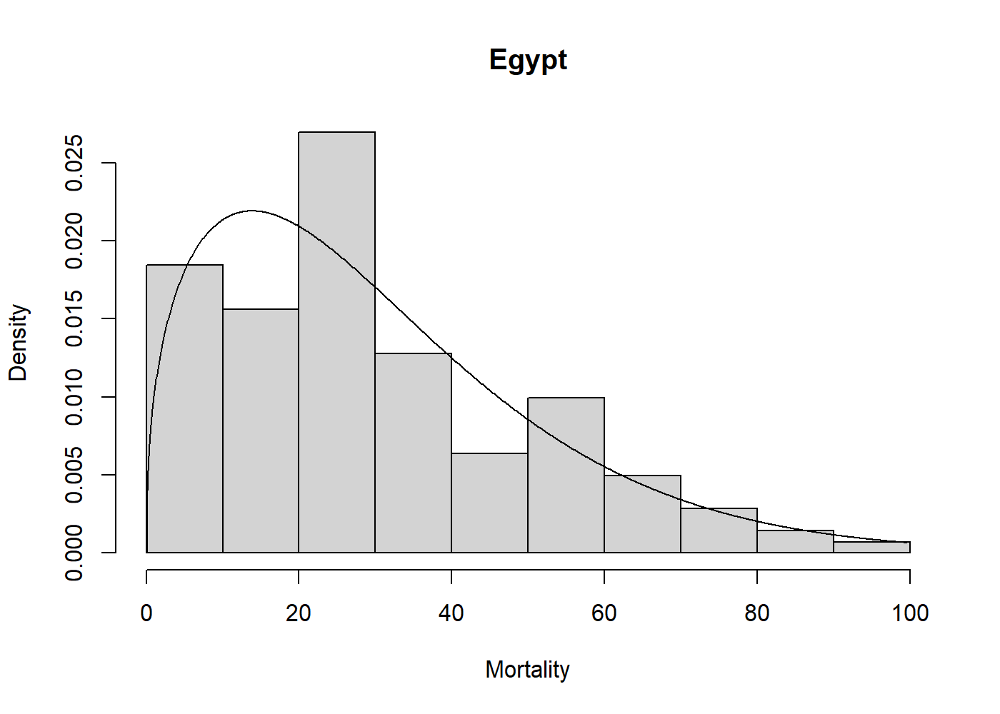

Overview
univariateML is an R-package for user-friendly maximum likelihood estimation of a selection of parametric univariate densities. In addition to basic estimation capabilities, this package support visualization through plot and qqmlplot, model selection by AIC and BIC, confidence sets through the parametric bootstrap with bootstrapml, and convenience functions such as the density, distribution function, quantile function, and random sampling at the estimated distribution parameters.
Installation
Use the following command from inside R to install from CRAN.
install.packages("univariateML")Or install the development version from Github.
# install.packages("devtools")
devtools::install_github("JonasMoss/univariateML")Usage
The core of univariateML are the ml*** functions, where *** is a distribution suffix such as norm, gamma, or weibull.
library("univariateML")
mlweibull(egypt$age)
#> Maximum likelihood estimates for the Weibull model
#> shape scale
#> 1.404 33.564Now we can visually assess the fit of the Weibull model to the egypt data with a plot.

Supported densities
| Name | univariateML function | Package |
|---|---|---|
| Cauchy distribution | mlcauchy |
stats |
| Gumbel distribution | mlgumbel |
extraDistr |
| Laplace distribution | mllaplace |
extraDistr |
| Logistic distribution | mllogis |
stats |
| Normal distribution | mlnorm |
stats |
| Student t distribution | mlstd |
fGarch |
| Generalized Error distribution | mlged |
fGarch |
| Skew Normal distribution | mlsnorm |
fGarch |
| Skew Student t distribution | mlsstd |
fGarch |
| Skew Generalized Error distribution | mlsged |
fGarch |
| Beta prime distribution | mlbetapr |
extraDistr |
| Exponential distribution | mlexp |
stats |
| Gamma distribution | mlgamma |
stats |
| Inverse gamma distribution | mlinvgamma |
extraDistr |
| Inverse Gaussian distribution | mlinvgauss |
actuar |
| Inverse Weibull distribution | mlinvweibull |
actuar |
| Log-logistic distribution | mlllogis |
actuar |
| Log-normal distribution | mllnorm |
stats |
| Lomax distribution | mllomax |
extraDistr |
| Rayleigh distribution | mlrayleigh |
extraDistr |
| Weibull distribution | mlweibull |
stats |
| Log-gamma distribution | mllgamma |
actuar |
| Pareto distribution | mlpareto |
extraDistr |
| Beta distribution | mlbeta |
stats |
| Kumaraswamy distribution | mlkumar |
extraDistr |
| Logit-normal | mllogitnorm |
logitnorm |
| Uniform distribution | mlunif |
stats |
| Power distribution | mlpower |
extraDistr |
Implementations
Analytic formulae for the maximum likelihood estimates are used whenever they exist. Most ml*** functions without analytic solutions have a custom made Newton-Raphson solver. These can be much faster than a naïve solution using nlm or optim. For example, mlbeta has a large speedup over the naïve solution using nlm.
# install.packages("microbenchmark")
set.seed(313)
x <- rbeta(500, 2, 7)
microbenchmark::microbenchmark(
univariateML = univariateML::mlbeta(x),
naive = nlm(function(p) -sum(dbeta(x, p[1], p[2], log = TRUE)), p = c(1, 1)))
#> Unit: microseconds
#> expr min lq mean median uq max neval
#> univariateML 259.2 348.75 557.959 447.05 536.40 5103.5 100
#> naive 15349.1 15978.35 16955.165 16365.45 17082.25 48941.4 100The maximum likelihood estimators in this package have all been subject to testing, see the tests folder for details.
Documentation
For an overview of the package and its features see the overview vignette. For an illustration of how this package can make an otherwise long and laborious process much simpler, see the copula vignette.